We trained a model that
corrects LiDAR-to-camera
calibration to sub-pixel.
A 1.62 M-parameter cross-attention network takes a 128×128 image crop plus the LiDAR points projected into it, and predicts the 2-D pixel offset that snaps each point back to where it should be — 0.91 px mean object error on held-out objects, well below the native 4 px LiDAR-beam spacing.
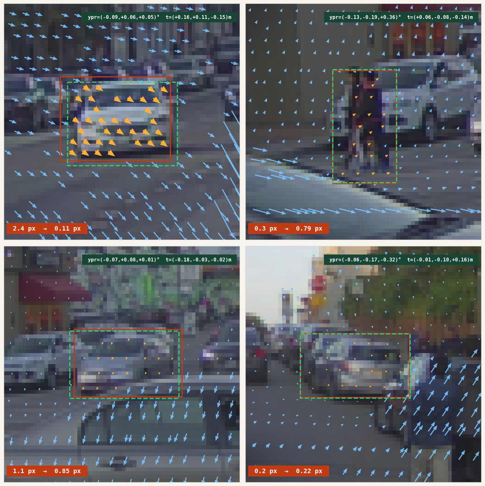
§ 01 MotivationAutomating the calibration engineer's eye.
Classical calibration — chessboards, targets, SfM — produces a set of rigid transforms (SE(3), i.e. rotation plus translation) between each sensor pair; they are accurate at the moment of capture and stale the moment a sensor moves. Factory calibration on a large vehicle fleet drifts out of spec within months, and running a full re-calibration pipeline in production is operationally unrealistic.
The tempting response is to throw a single large end-to-end model at the whole rig — a CalibFormer-style system that takes all sensor streams and regresses the full set of extrinsics at once. That is the wrong factoring. A unified model is expensive to train, brittle to per-vehicle sensor layout changes, and couples every sensor's error modes into every other sensor's prediction. It also bakes in a rig topology that fleet teams routinely change — adding a telephoto, moving a side LiDAR, swapping a bumper camera.
The calibration model itself is small. Six degrees of freedom per sensor pair, perhaps a few intrinsic knobs — a handful of parameters. Bundle adjustment has been solving for that class of model from 2-D observations for decades; it does not need a neural network. What it needs is observations: many per-point measurements of where each projected point actually ought to land, with uncertainty. So we factor the problem the way SfM already does:
- Network = local evidence detector. For each small RGB crop the network takes the projected LiDAR points visible inside it and, for every point, emits a 2-D Gaussian
(Δu, Δv)with full covariance — the mean says where the point should really land, the covariance says how confidently. - BA = global solver. These per-point observations are accumulated across frames and crops, then fed to a standard bundle-adjustment stage that jointly re-optimises the per-pair rigid transforms. The same stage SfM and SLAM already use. One forward pass per crop; one non-linear solve for the rig.
Why small patches are enough — and why that matters for compute. Calibration drift shows up as a local misalignment: a pole whose lidar hits sit a few pixels off its silhouette, a car whose contour does not match its returns. Whatever the underlying mis-pose, its visual signature on any single crop is bounded. The network does not need long-range attention across a full 1920×1080 frame; a small transformer on a 64×64 or 128×128 crop is enough. Attention cost scales with patch area, not image area, and a drive log yields millions of crops per vehicle per day — cheap per-patch cost is what makes the approach operationally sane.
The same primitive covers every sensor pair. Any two sensors with overlapping FOV and a shared geometric primitive — edges, points, object boundaries — can be posed as: "given projected sensor-A primitives on image B, predict the 2-D pull-back with uncertainty onto image B features." Concretely:
- LiDAR → camera. Point clouds projected onto RGB, the case we train here.
- Camera → camera, forward-forward. A telephoto paired with the main forward camera (
TELE+FCM) share a narrow overlap band; features triangulated in one can be projected into the other, and the residual estimator pulls them back onto the correct pixels. This is the common case for modern multi-focal front rigs where tele and wide drift against each other after thermal cycling. - Camera → camera, side overlap. Adjacent surround cameras with 10–20° shared FOV.
- RADAR → camera. Coarse radar points projected onto image, corrected to nearest RCS-consistent visual structure.
The dataset used for this report is PandaSet — 103 outdoor driving scenes with synchronised Hesai Pandar64 LiDAR and six RGB cameras — perturbed with small synthetic calibration drift at load time, so the model sees a consistent training signal. The narrow research question here: how well does the residual generalise across object instances the model has not seen? Earlier runs held out whole scenes; here we hold out objects, isolating appearance-level generalisation from the larger scene-domain shift.
§ 02 Problem SetupOne crop, one evidence packet.
Each training example is a 128×128 RGB crop centred on a single 3-D object, together with the LiDAR points visible in the crop projected as (u, v, d) — image coordinates plus depth. A synthetic calibration perturbation (≤ 0.2 m translation, ≤ 0.5° rotation) is applied before projection, producing a distorted copy of each point; the regression target is the 2-D offset from the distorted projection back to the true projection. After a single forward pass, each crop yields a batch of per-point (μ, Σ) observations — one "evidence packet" that the downstream bundle-adjustment stage consumes.
Points are tagged obj or bg. Object points live inside the 3-D bounding box — sparse (≈ 20–40 per crop) but visually anchored. Background points are whatever else the LiDAR returns inside the crop — road, buildings, distant cars — dense but often weakly constrained by the image.
§ 03 MethodCalibNetDepth, cross-first.
3.1 Architecture
3.2 Frustum encoding
A plain PointMLP treats each LiDAR point in isolation — it sees (u, v, d) and nothing about its neighbours. But calibration residuals are a local-geometry problem: a point sliding sideways is only meaningful relative to points at similar depth. The frustum encoder adds that local context. For each query point i we form a 3-D box in (u, v, d) space, take the k UV-nearest points inside it, and summarise their relative offsets with a shared MLP followed by max-pool. The resulting per-point descriptor is added to the PointMLP token before the cross-attention decoder sees it.
(u, v, d) space — radius r_uv in the image plane, r_d along depth — and take the k UV-nearest points inside it (green filled). A point that is close in UV but at a different depth layer (grey, above/below the box) is not a neighbour: depth is what separates the query object from the road behind it. (B) A shared MLP lifts each relative offset (Δu, Δv, Δd) into ℝ^D, and a max-pool over the k neighbours produces a per-point geometric descriptor that is added to the plain PointMLP token before the decoder sees it.3.3 Loss
Per-point 2-D Gaussian negative log-likelihood with full 2×2 covariance parametrised by log σᵤ, log σᵥ, ρ. The loss is averaged over valid (non-padded) points, not summed, so the gradient scale is independent of how many points fall in a crop — important when mixing datasets with different point densities.
3.4 Object-level split
PandaSet's 103 scenes yield 33,458 object crops. Earlier runs held out whole scenes (10 % val), which conflates two failure modes: new instances and new environments. Here the concatenated crop pool is shuffled and split 90 / 10 at the instance level (seed 42), so every scene is represented in both splits but no crop appears in both.
§ 04 ResultsHeadline numbers.
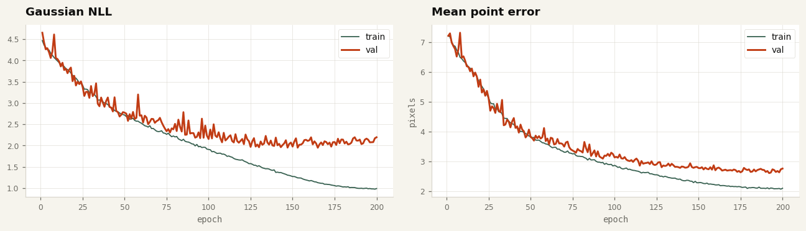
| epoch | train NLL | val NLL | train obj MSE | val obj MSE | train bg MSE | val bg MSE |
|---|---|---|---|---|---|---|
| 1 | +4.468 | +4.653 | 6.06 | 6.02 | 7.25 | 7.24 |
| 25 | +3.419 | +3.377 | 3.13 | 2.90 | 5.20 | 5.18 |
| 50 | +2.718 | +2.773 | 1.94 | 1.83 | 3.90 | 3.88 |
| 75 | +2.264 | +2.336 | 1.49 | 1.42 | 3.31 | 3.43 |
| 100 | +1.908 | +2.154 | 1.20 | 1.20 | 2.92 | 3.20 |
| 125 | +1.576 | +1.969 | 1.02 | 1.04 | 2.60 | 2.97 |
| 150 | +1.271 | +1.976 | 0.85 | 0.96 | 2.33 | 2.84 |
| 175 | +1.058 | +2.083 | 0.76 | 0.89 | 2.20 | 2.69 |
| 200 | +0.989 | +2.195 | 0.73 | 0.91 | 2.15 | 2.82 |
§ 05 AnalysisWhere the generalisation gap lives.
The sub-pixel headline obscures a more nuanced story. Training NLL continues to fall through epoch 200 (obj -0.55, bg +1.04) while val NLL flattens around epoch 130. This is not uniform overfitting: val MSE continues to decrease even while val NLL stalls.
The most likely mechanism is σ overfitting. The mean prediction (Δu, Δv) generalises — the geometric relationship between image edges and LiDAR points transfers to unseen instances. The predicted covariance, however, is being calibrated against training-set residual statistics; at validation time the Mahalanobis term (err / σ)² pays the price whenever σ is too tight for the actual observed error distribution.
The gap is also not uniform across point types. Object points generalise tightly — val obj NLL +0.19 against train -0.55, a gap of 0.7. Background points carry most of the generalisation cost — val bg +2.26 against train +1.04, a gap of 1.2. Background points are exactly the points for which the image offers weak cues — sky, road, far buildings — so calibrating σ for them is the hard part, and a larger training pool is likely the cheapest way to help.
Two directions follow naturally. (i) Multi-dataset training. Adding NuScenes and Waymo gives the covariance head a more diverse residual distribution to calibrate against. (ii) σ regularisation. Penalising log|Σ| shrinkage, or swapping to a Student-t likelihood, prevents the covariance from chasing training-set minutiae.
§ 06 Samples48 held-out val crops.
Each tile shows per-point correction arrows (orange for object, blue for background), the raw object bounding box (red solid), the predicted-shifted box (cyan dashed), and a white centre-shift arrow. Titles read obj_err before → after, bg_err before → after, mean obj shift (dx, dy) in pixels.
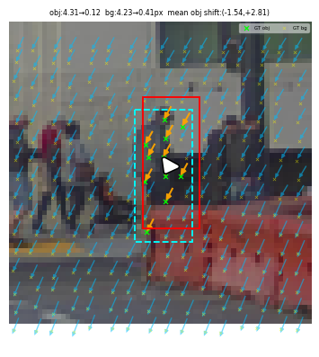
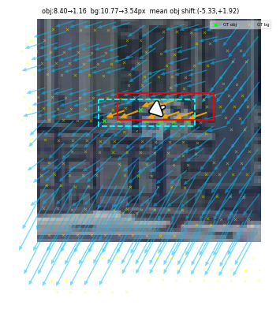
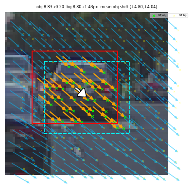

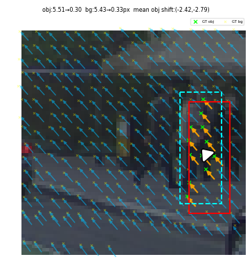
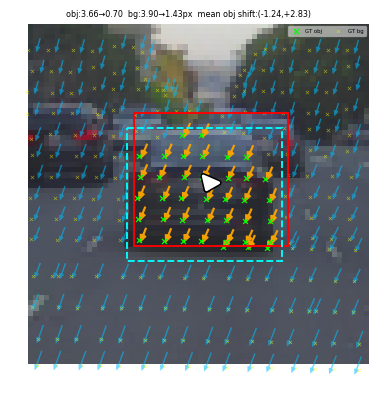
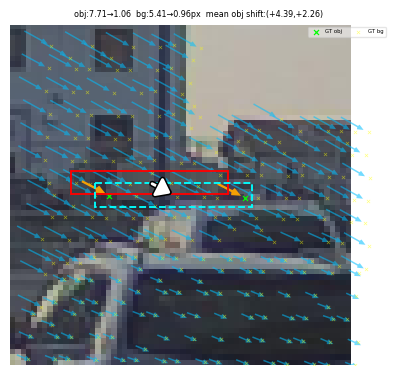
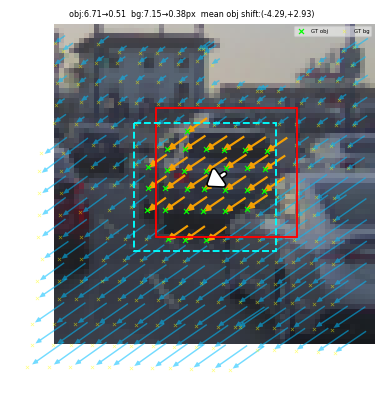
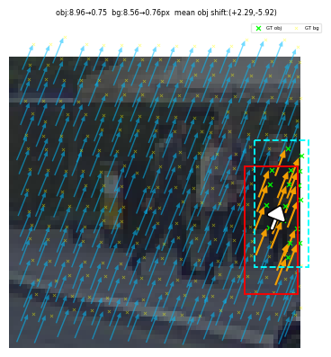
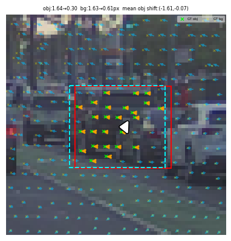
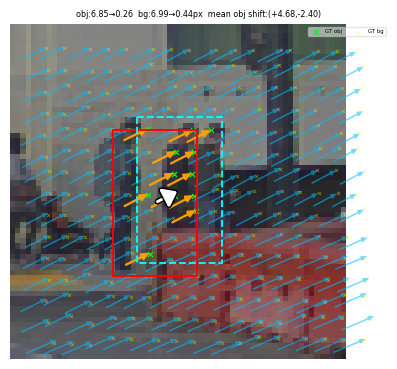


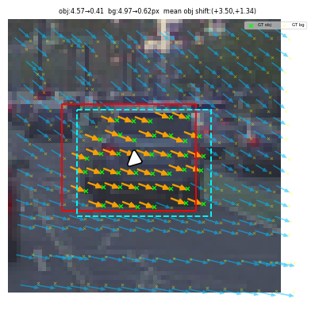
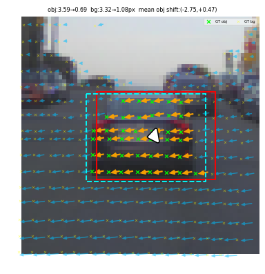
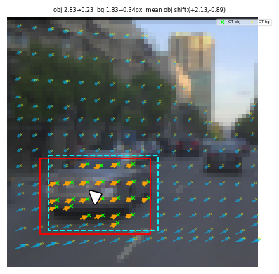


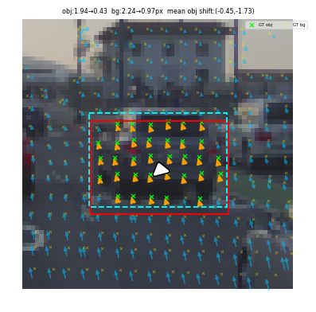

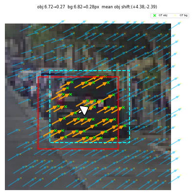
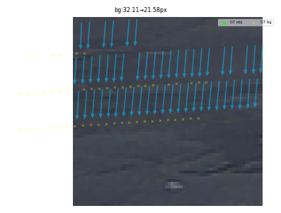

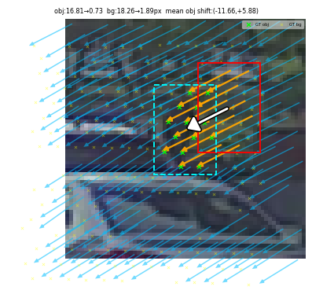

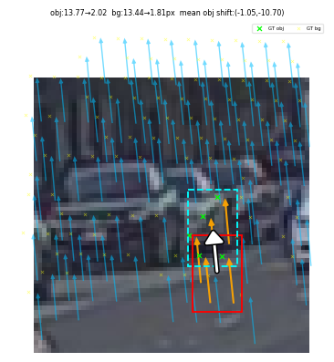
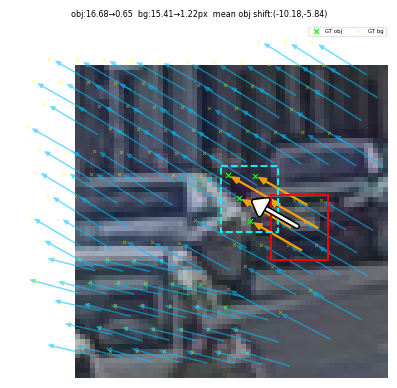
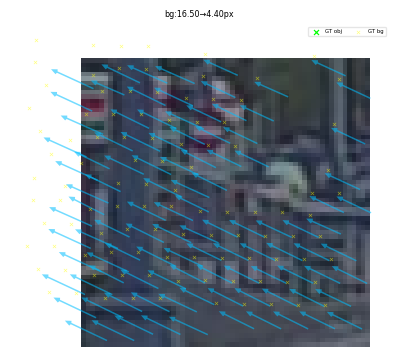

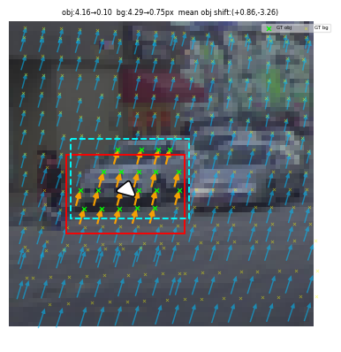

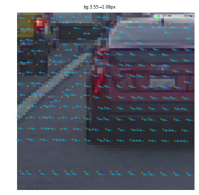
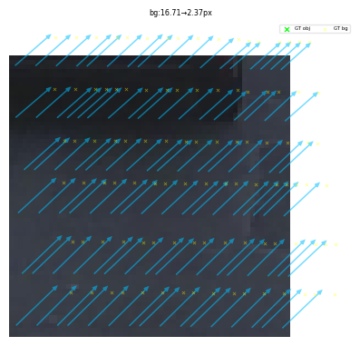

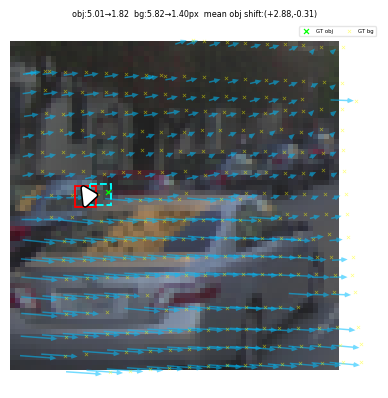

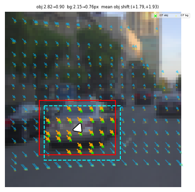


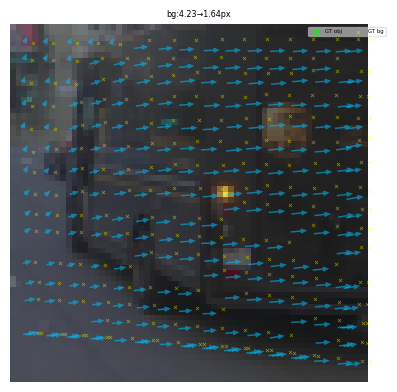
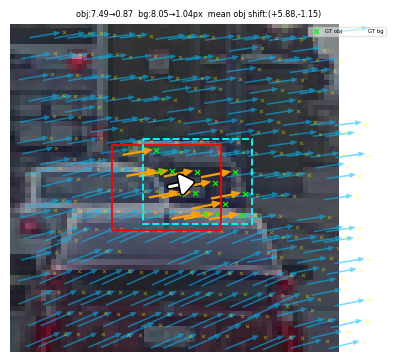

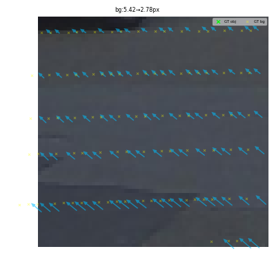
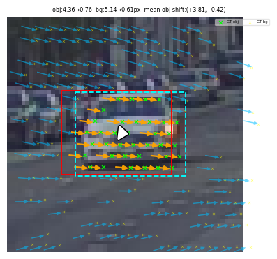